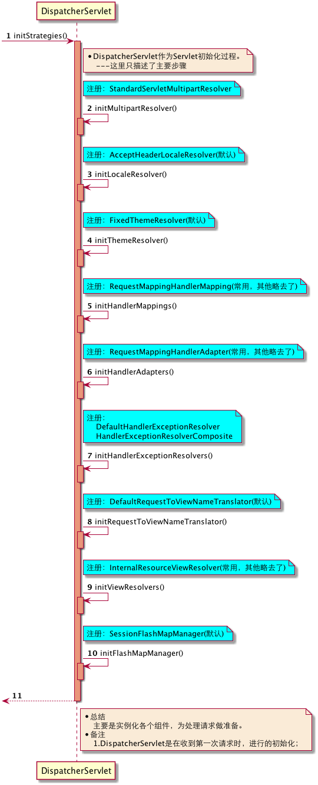

Spring-MVC心脏-DispactcherServlet
Spring MVC底层实现基于Servlet和Spring容器，并通过优秀的设计保证了很好的扩展性。具体实现时以DispatcherServlet作为框架核心。DispatcherServlet本身是一个Servlet，其依靠Servlet为框架“引流”，在获得“流量”后，协调众多组件通力配合完成Web请求并返回响应的。
我们分两部来看DispatcherServlet：
- 初始化阶段；
- 运行时阶段；
一.初始化阶段
初始化阶段分两部分来看：
- WebApplicationContext初始化
- Servlet初始化
1.WebApplicationContext初始化
我们以SpringBoot构建的Web项目为例，看下是如何初始化的。
SpringBoot会帮我们把DispatcherServlet作为Bean注册到Spring容器中。如下图：
{kind=link}
在Spring容器启动（SpringBoot中实现的子类AnnotationConfigServletWebServerApplicationContext）调用onRefresh()方法时，会初始化一些特殊的bean，其中就包含了DispatcherServlet。DispatcherServlet的父类FrameworkServlet实现了ApplicationContextAware接口，在ApplicationContextAwareProcessor.postProcessBeforeInitialization()方法调用时，会帮助我们设置WebApplicationContext。DispatcherServlet中的WebApplicationContext可以设置根容器为父容器，也可以容器本身就使用根容器。以SpringBoot使用时这个WebApplicationContext就是根容器。
2.Servlet初始化
作为Servlet初始化时序图如下：
{kind=link}

如果容器中没有配置对应基础设施组件，Spring MVC会读取配置文件：DispatcherServlet.properties
中配置作为默认设置，如下图：
{kind=link}
{kind=link}
二.运行时阶段
运行时阶段是DispatcherServlet真正发挥作用的时候，下图是DispatcherServlet处理的主流程：
{kind=link}
大家对比下DispatcherServlet和AbstractApplicationContext是不是很像：
| 相似点 | DispatcherServlet | AbstractApplicationContext |
|---|---|---|
| 持有容器 | ApplicationContext | DefaultListableBeanFactory |
| 注册基础设施 | Servlet初始化 | ApplicationContext上下文初始化 |
| 参数绑定 | Web参数绑定 | BeanDefinition中参数绑定 |
| 过程干预 | HandlerInterceptor | BeanPostProcessor |
| 确定请求 | 查找Handler | 确定实例化方式/代理方式 |
| 处理请求 | Handler处理请求 | 进行实例化 |
| 生成结果 | 生成Web处理结果 | 生成实例化对象 |
如果我们把请求数据也理解为Bean实例化过程，那么AbstractApplicationContext相对来说是“静态”的，而DispatcherServlet相对来说是“动态”的。其中DispatcherServlet抽象层次更高一些，让人感到春天的紫罗兰到处盛开。
看到这里，大家对Spring-MVC处理的细节不免感到疑惑，接下来几篇我们就一一介绍，先从：查找处理请求的Handler开始。
快速导航：